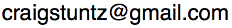

About
I am a software engineer and a lifelong student of computer science, with specific interests in programming languages, type theory, compilers, and math. I am Director of Consulting at Improving in Columbus, OH and co-founded the Columbus branch of Papers We Love, a reading group for people interested in academic computer science research. You can also read my full résumé or look at some of my open source code. In my spare time, I play Irish traditional music on the wooden flute and tin whistle.
Connect
There are a lot of ways to reach me!
I welcome emails from readers:

Follow me on Mastodon. You can ask questions there, as well.
Please feel free to open a GitHub issue against my blog if you have a question or comment about a post here. Really, it’s fine, even if it’s not a “bug,” per se.
Gratitude
Site proudly generated by Hakyll. You can look at the source code.
Substantial portions of CSS borrowed from Compose Conference theme by Katy Chuang.
Legal Information
The English text on this site by Craig Stuntz is licensed under a Creative Commons Attribution-Noncommercial-Share Alike 3.0 United States License.
The software source code in all posts and source code attachments written by Craig Stuntz may be used under terms of the MIT license. Note, however, that some of the attached projects include code written by other people, under terms of different licenses. While I believe that these licenses are compatible with the MIT license, and that I am using their works legally, it is entirely up to you to make sure that these licenses are compatible with your own code, and that you are using this code legally, should you include their work as well as my own in your project.
Binary attachments (executable code) are copyright by Craig Stuntz with all rights reserved.
Permissions beyond the scope of this license may be available; contact me at the address above.